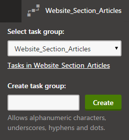
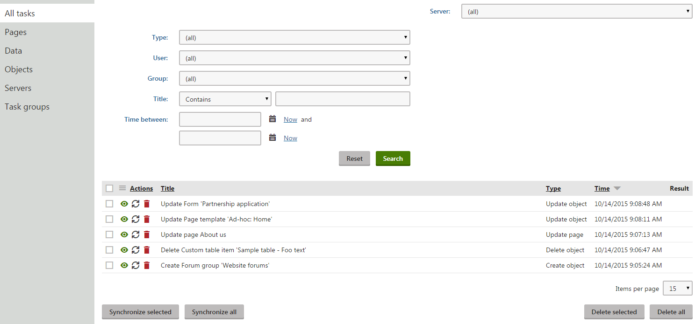
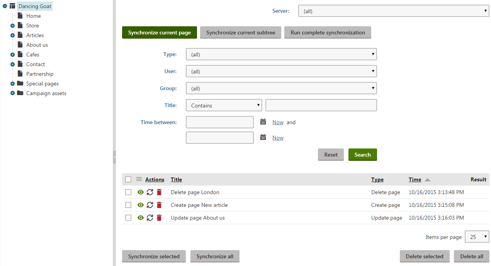
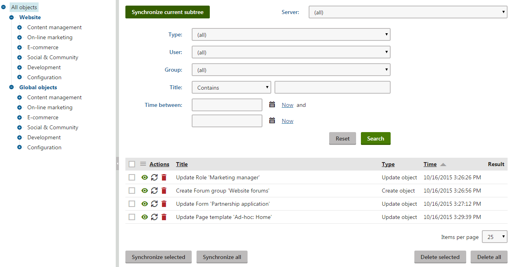

Synchronizing the content
After you configure staging, the system tracks changes made to pages and objects. Whenever an object or page is created, modified or deleted (either by a user or an automatic process), the system logs a staging task representing the change.
Note: Before you synchronize content between two servers, make sure that matching sites on the source and target server have the same Code name. You can set the code name when editing sites in the Sites application, but it is NOT recommended to change the code name of a running production site.
Organizing staging tasks into groups
The system allows users to create groups for organizing staging tasks. Groups can represent individual work projects, changes that affect a specific section of a website, or any other collection of related staging tasks. For example, all staging tasks related to the creation of a new article section of a website could be organized into a group named Website_Section_Articles.
The groups are shared by all users in the system and do not imply ownership of staging tasks. The only purpose of the groups is to allow filtering of tasks when performing synchronization.
After you enable logging of staging tasks for at least one type of content (pages, objects or custom table data), the header of the administration interface starts displaying a staging task group selector.

Selector of the staging task group context in the administration interface header
Users can switch to the context of a specific task group at any time.

Setting the staging task group context - either select an existing group or create a new one
The system then categorizes any staging tasks logged as a result of the user's changes under the selected group. When synchronizing changes to other servers in the Staging application, users can filter staging tasks based on groups.
To add new task groups, type a name in the group selection dialog and click Create. The names of groups must be unique and only allow alphanumeric characters, underscores, hyphens and dots. You can also manage (create, edit, delete) all staging task groups in the Staging application on the Task groups tab.
Task group permissions
Creating new task groups in the selection dialog and managing groups on the Task groups tab of the Staging application requires the Manage task groups permission for the Staging module.
Switching to the context of existing groups via the administration interface header does not require any permissions.
Notes:
Staging task groups are NOT a security feature and do not imply ownership of tasks. Any users of the administration interface can switch to the context of task groups created by other users. Users with access to the Staging application can synchronize tasks in any group.
If users work with the same page or object in the context of multiple different task groups, the resulting staging tasks are included in all of the groups.
Task groups are global and intended for scenarios where one body of users manages all sites in the system. On multi-tenant instances with independent sites, you may encounter conflicts when using the shared set of task groups.
In multi-stage environments, staging tasks that the system creates based on changes synchronized from another server include the group information of the original tasks. The system automatically creates any task groups that do not exist on the server.
User footprints of staging tasks
When a user performs a change that generates a staging task, the system includes the user's name in the data of the given staging task. This user footprint can then be used to filter staging tasks and synchronize changes made by specific users.
If multiple users work with the same page or object, the footprint of the resulting staging tasks contains all of the usernames. For example, if user A updates the summary field of an article page and user B later modifies the content field of the same page, the user footprint of the corresponding "update page" staging task contains both users A and B.
In multi-stage environments where the system creates staging tasks based on changes synchronized from another server, the footprint of the new staging tasks contains the user who performed the synchronization on the source server (if the given user exists on the target server).
For tasks generated as a result of automatic processes, the user footprint depends on the context used by the given code. For example, scheduled tasks can be configured to run in the context of a specific user via their Use context of user property.
Managing staging tasks
Use the Staging application to work with the staging tasks that represent changes of the system's pages and objects. The interface for viewing staging tasks and performing synchronization is divided into the following tabs:
All tasks - lists staging tasks generated for all types of objects or pages (i.e. all changes made in the system that can be synchronized to target servers).
Pages - lists staging tasks representing changes made to the website's pages.
Data - lists staging task representing changes made to the data of custom tables.
Objects - lists staging tasks representing changes made to objects in the system (both global and site-related).
Each of the tabs contains a list of staging tasks and a filter that can help you find relevant tasks. For example, the filter allows you to find:
Tasks logged as a result of changes made by specific users (based on the user footprint of tasks).
Tasks logged within the context of specific task groups.
Tasks logged within a specific date and time interval.
Using the Server selector, you can switch between the target servers to which you want to synchronize the changes. You can either synchronize tasks separately for specific staging servers, or choose (all) to perform synchronization for all available servers.
The buttons below the list allow you to perform the following actions:
Synchronize selected - synchronizes all selected tasks to the target server.
Synchronize all - synchronizes all listed tasks to the target server (limited by any filtering options).
Note: Synchronization overwrites any changes that were made to the given object or page on the target server.
Delete selected - deletes all selected tasks for the selected target server.
Delete all - deletes all listed tasks for the selected server (limited by any filtering options).
You can also perform the following actions separately for specific staging tasks:
 View - opens a new window with detailed information about the staging task.
View - opens a new window with detailed information about the staging task.Synchronize - synchronizes the task to the selected server.
 Delete - deletes the synchronization task for the selected server.
Delete - deletes the synchronization task for the selected server.

Synchronizing content - all staging tasks
Synchronizing pages
To manage changes logged for the website's pages, open the Pages tab of the Staging application. By clicking the website root in the content tree, you can view a list of all changes (synchronization tasks) made to all the pages on your site. Click individual pages to view only the changes made to the selected page and its descendants (subtree).
The system logs the following task Types for pages:
Create page - a new page was created.
Update page - the page was modified.
Move page - the page was moved to another location in the content tree.
Delete page - the page was deleted.
Delete all cultures - all culture versions of the page were deleted.
Publish page - the page was published.
Reject page - the page was rejected to the previous workflow step.
Archive page - the page was archived.
Break ACL inheritance - the page was configured to no longer inherit security settings from its parent.
Restore ACL inheritance - the page was configured to start inheriting security settings from its parent.

Synchronizing content - pages
If you wish to synchronize the current state of existing pages to a target server manually, use the buttons above the task list:
Synchronize current page - synchronizes the page currently selected in the tree.
Synchronize current subtree - synchronizes the selected page and all descendants in the subtree.
Run complete synchronization - synchronizes the site's entire content tree.
The buttons do not automatically ensure full synchronization of the content tree. Manual synchronization first creates update tasks for the selected pages and then automatically synchronizes all existing staging tasks for the given website section.
You cannot manually generate synchronization tasks for actions like moving of pages in the content tree, deletion of pages or changes in workflow state (publishing, archiving, rejecting). The system logs such tasks automatically when the corresponding events occur on the site.
Synchronizing objects
To manage changes logged for objects in the system, open the Objects tab of the Staging application.
The tree allows you to filter the tasks according to object types. The Website category contains object changes related to the currently selected site, and the Global objects category contains changes of global objects.
The system logs the following task Types for objects:
Create object - a new object was created.
Update object - the object was modified.
Delete object - the object was deleted.
Add to site - the object was assigned to a site. Applicable only to site-related objects.
Remove from site - the object was removed from a site. Applicable only to site-related objects.
The following types of tasks are logged for folders in media libraries:
Create media folder - a folder was created.
Rename media folder - the folder was renamed.
Copy media folder - the folder was copied.
Move media folder - the folder was moved.
Delete media folder - the folder was deleted.
Delete media root folder - the root folder of a media library was deleted.

Synchronizing content - objects
If you wish to manually synchronize all objects of a certain type, select the given object category in the tree and click Synchronize current subtree. The action first creates update tasks for all selected objects and then automatically synchronizes all existing staging tasks for the given objects. You cannot manually generate synchronization tasks for the deletion of objects or for the assignment of objects to sites. The system creates such tasks automatically when the corresponding events occur.
Warning
When you stage an object, the synchronization also includes all child objects and bindings (relationships with other objects) in most cases.
For example: A role is not assigned to any users in the development environment, but to 100 users on the target production server. If you synchronize the role object through staging, the users are removed from the role on the target server.
To avoid potential problems, we strongly recommend having mirrored content and consistent objects on all staging servers whenever possible. Developers can also customize the staging of child and binding objects to adjust the behavior according to your environment's requirements.
Synchronizing global objects on instances with multiple sites
Changes made to global objects, such as page types, produce staging tasks for all staging servers on all sites. We recommend synchronizing such changes at the same time on all servers and sites to prevent overwriting of data (you may overwrite newer data by synchronizing old tasks later).
If you run a multi-site instance where you have full control over all sites, you can set up the following scenario:
Define the same set of target servers for each site (in the Staging application):
Each server must have an identical Code name across all sites.
The Service URLs of each site's servers must use the domain names of the matching site on the target instance.
Add the <add key="CMSStagingTreatServerNamesAsInstances" value="true" /> key to the appSettings section of your application's web.config file.
When you now synchronize a staging task representing a global object, the system automatically deletes the task from servers with the same code name on other sites. If you synchronize a global task for all servers, the task is removed completely on the remaining sites.
Synchronizing custom table data
To manage changes logged for the data of custom tables, open the Data tab of the Staging application.
The system logs the following task Types for custom table data:
Create object - a new item was added to a table.
Update object - an item in a table was updated.
Delete object - an item in a table was deleted.
Staging tasks for custom table items are logged based on their ItemGUID columns. Changes made to items that do not have this column (typically custom tables imported from older versions of Kentico) are not logged.
You can edit custom tables in the Custom tables application. The application displays a warning message with a link that lets you generate GUIDs for custom tables.
You can also synchronize custom tables manually:
Run complete synchronization - updates all data in all custom tables.
Synchronize current subtree - updates data in the selected custom table.
Note: The buttons cannot be used to synchronize the deletion of custom table records. The manual synchronization first creates update tasks for all data records in the selected custom tables and then automatically synchronizes all existing staging tasks for the given tables. Deletion only occurs if delete tasks are already logged by the system.